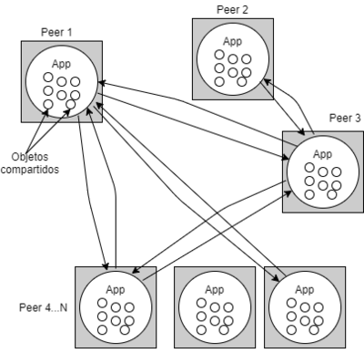

#4 Arquitectura de Memoria Distribuida con Paso de Mensajes (Hybrid Memory and Message Passing)

La arquitectura de memoria distribuida con paso de mensajes, también conocida como Hybrid Memory and Message Passing, es un modelo que combina características de la arquitectura de memoria distribuida y la arquitectura de paso de mensajes. En este enfoque híbrido, cada nodo tiene su propia memoria local y puede comunicarse tanto a través del paso de mensajes como compartiendo memoria común.
En este modelo, los nodos se comunican intercambiando mensajes a través de una red de comunicación, al igual que en la arquitectura de paso de mensajes. Los mensajes se utilizan para compartir datos y coordinar tareas entre los nodos. Sin embargo, a diferencia de la arquitectura de paso de mensajes pura, los nodos también pueden acceder directamente a una memoria compartida.
La memoria compartida en este modelo puede ser implementada de varias formas. Por ejemplo, puede ser un espacio de memoria física compartido entre los nodos o puede ser un espacio de memoria virtual que se mapea en la memoria local de cada nodo. Los nodos pueden leer y escribir en esta memoria compartida como si fuera su propia memoria local, lo que facilita el intercambio rápido de datos.
La arquitectura de memoria distribuida con paso de mensajes es especialmente útil en casos donde combinar la comunicación basada en mensajes con el acceso directo a la memoria compartida puede optimizar el rendimiento y la eficiencia de las aplicaciones. Por ejemplo, en algoritmos donde se requiere una combinación de tareas distribuidas y cooperación intensiva entre los nodos.
Este enfoque híbrido permite aprovechar las ventajas de ambos modelos. El paso de mensajes proporciona una forma flexible de comunicación entre nodos, lo que permite la sincronización y la coordinación eficiente de tareas en aplicaciones paralelas complejas. Al mismo tiempo, el acceso directo a la memoria compartida agiliza la transferencia de datos y permite a los nodos compartir información de manera más rápida y eficiente.
Sin embargo, la arquitectura de memoria distribuida con paso de mensajes también presenta desafíos. Los programadores deben tener en cuenta la sincronización y la coherencia de los datos compartidos en la memoria compartida, así como la gestión de la comunicación a través de mensajes. Además, la elección de la implementación de la memoria compartida y el diseño adecuado de algoritmos son aspectos críticos para lograr un rendimiento óptimo.
En resumen, la arquitectura de memoria distribuida con paso de mensajes es un modelo híbrido que combina características de la arquitectura de memoria distribuida y la arquitectura de paso de mensajes. Permite la comunicación entre nodos a través del intercambio de mensajes y el acceso directo a una memoria compartida. Este enfoque híbrido es adecuado para aplicaciones que requieren tanto procesamiento distribuido como cooperación intensiva entre los nodos.